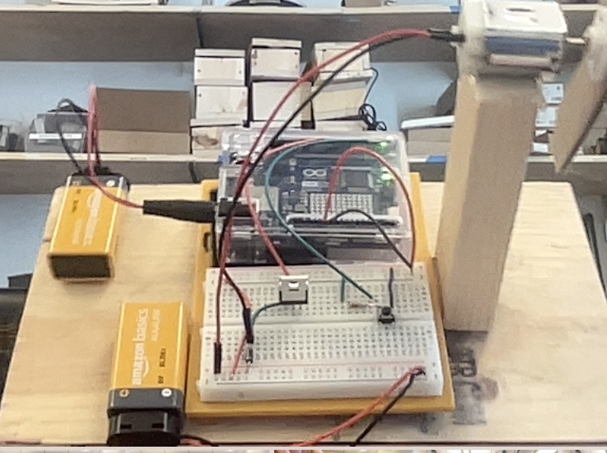
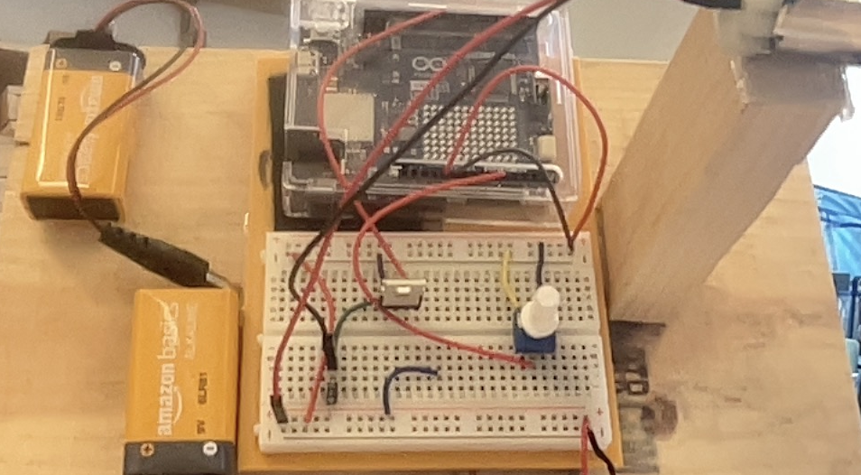

Spencer Paley-Sitko
Digital Portfolio
Digital Portfolio

For the code portion of 2_1, we were provided with a skeleton code and had to fill in the blanks. We had to create our own variables and chose what pins to use for the buttons and motor. The code checks the state of the button and if it's pressed, it turns the motor on. If the button is not pressed, the motor is off. The difficulty I encountered was before we were supplied a code skeleton, I created a code that simply just turns the motor on and off every 2 seconds.
For project materials, we used a DC motor, a button, and an Arduino to create a simple circuit. The button acts as a switch and when pressed, it completes the circuit and powers the motor. We used 2 9v batteries in this project. 1 battery powers the Arduino and the other power the motor. This is done so we have enough power to run both with enough speed.
For some of the code, we used new functions and variables that we hadn't before. One of the ones we used was constant variables: it's a variable that is read only and cannot be changed after it's been assigned. The pinMode command is used to set a specific pin as input or output and we used it to set the button pin as input and the motor pin as output. The variable we used for switchState is an integer variable that keeps the state of the button (pressed or not pressed) and we used it to find out if the motor should be on or off. The difference between digitalWrite and digitalRead is that digitalWrite sends a HIGH or LOW signal while digitalRead reads the signal from a pin and stores it as a variable. For comparison operators, we used "==" to check the pressed state of the button and if it registered as HIGH, the motor would power on.
Some of the real life applications of this project include using a button to control a motor in something like a toy car. It can also be used in something like a fan but with a switch instead of a button.

For the code portion of Project 2_2, we took our code from 2_1 and modified it to work with the potentiometer instead of a button. We had to change the pin from digital to analog and had to use the map function to convert the potentiometers value to a value that the motor can use. The code reads the potentiometer which gives a value between 0 and 1023. The map function then makes the value usable for the motor by converting it into a 0-255 range. The motor speed is then set to the converted value. Other than that and replacing some variables, the code is very similar to 2_1.
Fortunately, I didn't run into any difficulties with either the build or the code. Other than a simple mistake of putting the wire meant for A1 into A0, everything went to plan. A few of the things that my group mates struggled with. Some of the real world applications of this project include using a potentiometer to control the speed of a fan or a motor in an appliance. It can also be used to dim a light by controlling the amount of power that goes to the light.


Code generation for the project 2 final was a reasonably long process. For the first part we, as a class, created both our constant variables and regular variables. We also created our pinMode setup for later in our project. After we did that together, we were given sudo code (code written in plain English) and had to handwrite the actual code that corresponed to it. In the code we wrote, we needed to map the potentiometer valus to work for the motor, write 6 if statments to control the on or off state of the motor, the direction of the motor and the speed of the motor. After we handwrote it, we tested it in our simulations and the had to adjust it to make it as simple as possible. Our programmer was the one that had to shorten it, but unfortunately, he was out so I completed it without him. Since we used a toggle button instead of the normal pushbutton, we had to use input pullup for the pins so it felt more natural to use. The code checks if the button is on and if it is, it checks the value of the potentiometer and powers the motor.
For the build portion of the project, we had to make a windmill that fit the specifications of the project. I chose to 3D print our windmill and designed it myself. The dimentions of the project were 6 x 6 x 12 (L x W x H). I designed the project in onShape and then for minor adjustments, used Tinkercad to space buttons and switches properly. The build ended up take a while with many different drafts and iterations being made. The drafts ranged from a super basic base to a hinged and latching mechanism that would allow easy access to the insides. The final design ended up being that hinged mechanism and a super complex tower that held all of the components well. The most difficult part was definitely the base. Even a little mistake in the measurements of the base caused the whole thing to not fit parts and it had to be reprinted.
We didn't run into many errors in this project thankfully, but there were a few small things that could have gone better. For one, during the code portion, we needed to make a few adjustments for the toggle button but we accidentally changed a pin assignent and had to go back and solve it. For the build portion, other than a few small measurment errors it went smoothly. As far as our biggest issue goes, for some reason our circuit wasn't working and we couldn't figure out why. After replacing all the components and even the Arduino itself, we finally determined the the issue was the breadboard. It had gotten pulled out wrong, damaging the rails and preventing the circuit from working. After replacing the breadboard, everything worked perfectly with the new buttons.
As far as real world applications go, there are many differnt things that this could be used for. To start, a fan could be using these for power, direction and speed control. It could also be used in something like an RC boat for power, propeller direction and its speed. A disco ball could use something like this to power on/off, change direction and even how fast it spins.

Code generation for the project 2 final was a reasonably long process. For the first part we, as a class, created both our constant variables and regular variables. We also created our pinMode setup for later in our project. After we did that together, we were given sudo code (code written in plain English) and had to handwrite the actual code that corresponed to it. In the code we wrote, we needed to map the potentiometer valus to work for the motor, write 6 if statments to control the on or off state of the motor, the direction of the motor and the speed of the motor. After we handwrote it, we tested it in our simulations and the had to adjust it to make it as simple as possible. Our programmer was the one that had to shorten it, but unfortunately, he was out so I completed it without him. Since we used a toggle button instead of the normal pushbutton, we had to use input pullup for the pins so it felt more natural to use. The code checks if the button is on and if it is, it checks the value of the potentiometer and powers the motor.
For the build portion of the project, we had to make a windmill that fit the specifications of the project. I chose to 3D print our windmill and designed it myself. The dimentions of the project were 6 x 6 x 12 (L x W x H). I designed the project in onShape and then for minor adjustments, used Tinkercad to space buttons and switches properly. The build ended up take a while with many different drafts and iterations being made. The drafts ranged from a super basic base to a hinged and latching mechanism that would allow easy access to the insides. The final design ended up being that hinged mechanism and a super complex tower that held all of the components well. The most difficult part was definitely the base. Even a little mistake in the measurements of the base caused the whole thing to not fit parts and it had to be reprinted.
We didn't run into many errors in this project thankfully, but there were a few small things that could have gone better. For one, during the code portion, we needed to make a few adjustments for the toggle button but we accidentally changed a pin assignent and had to go back and solve it. For the build portion, other than a few small measurment errors it went smoothly. As far as our biggest issue goes, for some reason our circuit wasn't working and we couldn't figure out why. After replacing all the components and even the Arduino itself, we finally determined the the issue was the breadboard. It had gotten pulled out wrong, damaging the rails and preventing the circuit from working. After replacing the breadboard, everything worked perfectly with the new buttons.
As far as real world applications go, there are many differnt things that this could be used for. To start, a fan could be using these for power, direction and speed control. It could also be used in something like an RC boat for power, propeller direction and its speed. A disco ball could use something like this to power on/off, change direction and even how fast it spins.